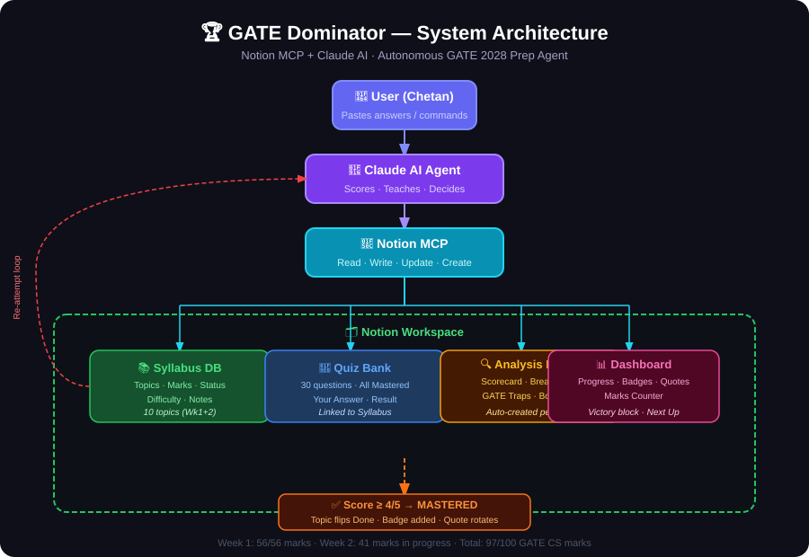

Autonomous AI-powered GATE coach built with Notion MCP + Claude.
One prompt. Zero manual work. Full closed-loop prep system.
5 topics · 56 marks · All mastered in 5 days
| Topic | Marks | First Attempt | Final Score | Status |
|---|---|---|---|---|
| General Aptitude | 15 | 2/5 (40%) | 5/5 (100%) | 🏆 Mastered |
| Engineering Mathematics | 13 | 2/5 (40%) | 5/5 (100%) | 🏆 Mastered |
| Computer Org & Arch | 11 | 4/5 (80%) | 4/5 (80%) | 🏆 Mastered |
| Digital Logic | 9 | 3/5 (60%) | 5/5 (100%) | 🏆 Mastered |
| Algorithms | 8 | 5/5 🔥 | 5/5 🔥 | 🏆 Mastered |
| TOTAL | 56 | — | 56/56 | ✅ Week 1 Complete |
Paste answers → agent handles everything else
Claude AI → Notion MCP → 4 Notion databases in a closed loop
